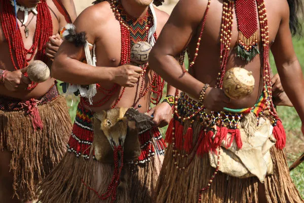

A importancia da populacao indígena
"Os povos indígenas do Brasil são os habitantes originários do território brasileiro e estavam presentes aqui antes da chegada dos europeus no final do século XV. Existe uma grande diversidade de povos indígenas no Brasil, e a população de indígenas, segundo critérios do Censo de 2022, é de aproximadamente 1,6 milhão. Atualmente, ainda existem uma série de obstáculos na vida dos povos indígenas do Brasil, como a demora na demarcação das terras indígenas e o desrespeito a essas demarcações por garimpeiros e madeireiros, que invadem ilegalmente essas terras." Veja mais sobre "Povos indígenas do Brasil"
A população indígena é importante para o Brasil por vários motivos, incluindo a preservação ambiental, a construção da identidade nacional e a diversidade cultural.
